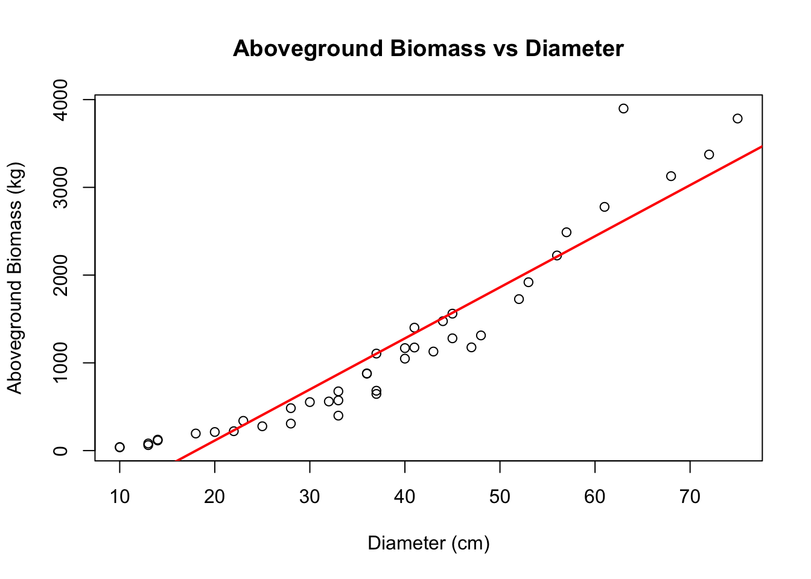
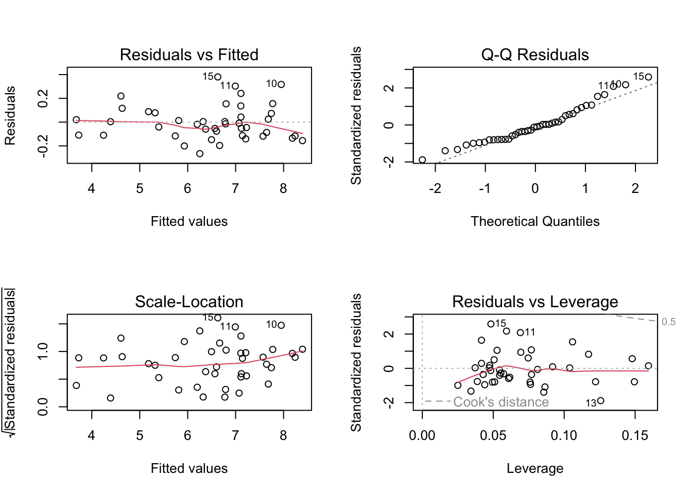
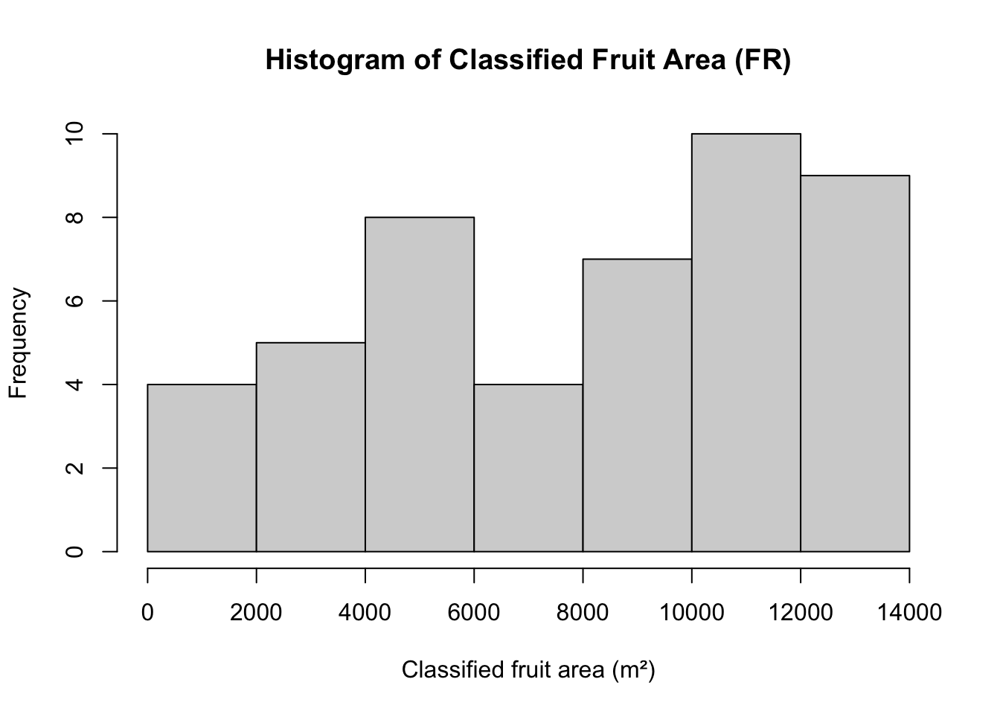
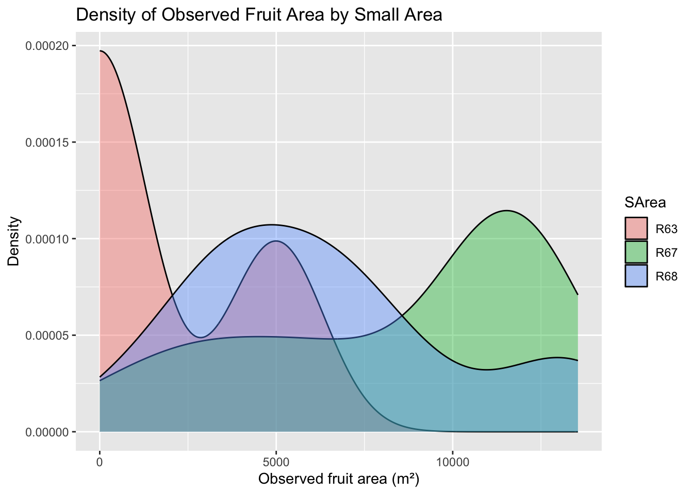
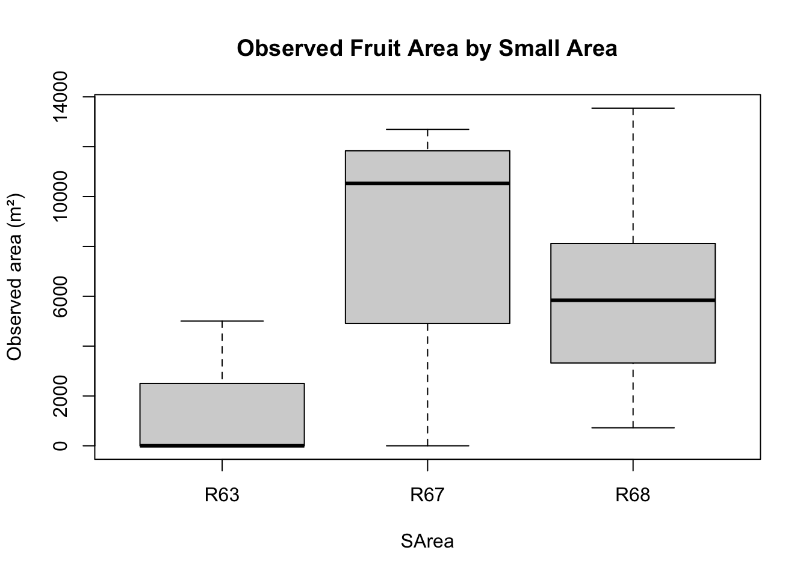
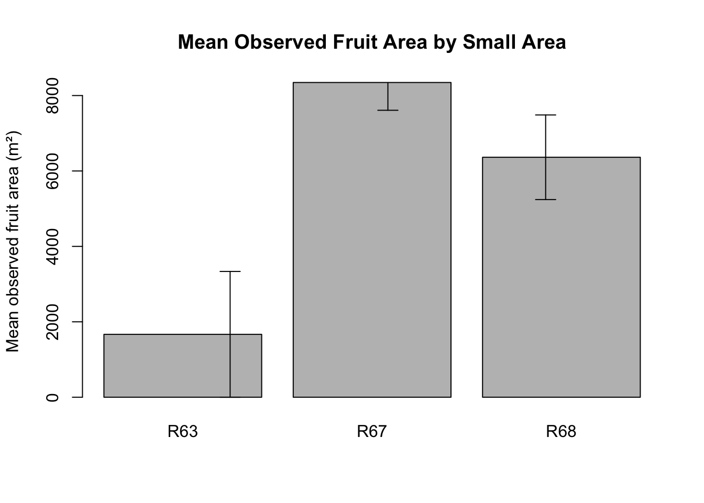

1.1 Data and ideas for this case study come from (Goicoa et al., 2011).
To estimate the amount of carbon dioxide retained in a tree, its biomass needs to be known and multiplied by an expansion factor (there are several alternatives in the literature). To calculate the biomass, specific regression equations by species are frequently used. These regression equations, called allometric equations, estimate the biomass of the tree by means of some known characteristics, typically diameter and/or height of the stem and branches. The BIOMASS file contains data of 42 beeches (Fagus Sylvatica) from a forest of Navarra (Spain) in 2006, where
diameter: diameter of the stem in centimeters
height: height of the tree in meters
stemweight: weight of the stem in kilograms
aboveweight: aboveground weight in kilograms
1.1.1 Create a scatterplot of above weight versus diameter. Is the relationship linear? Superimpose a regression line over the plot just created.
library(PASWR)data(biomass)str(biomass)
'data.frame': 42 obs. of 4 variables:
$ Dn : int 40 32 22 45 37 37 45 25 47 63 ...
$ H : num 18.5 18.8 13.2 20.5 17.5 19.8 20.5 17.3 20.7 25.1 ...
$ PST: num 647 397 132 810 510 ...
$ PSA: num 1048 560 221 1280 682 ...
Dn H PST PSA
Min. :10.00 Min. :13.20 Min. : 28.32 Min. : 37.28
1st Qu.:25.75 1st Qu.:18.57 1st Qu.: 232.07 1st Qu.: 315.66
Median :37.00 Median :22.80 Median : 685.51 Median : 878.15
Mean :37.45 Mean :22.54 Mean : 809.86 Mean :1130.71
3rd Qu.:46.50 3rd Qu.:26.82 3rd Qu.:1038.81 3rd Qu.:1456.43
Max. :75.00 Max. :30.90 Max. :2669.20 Max. :3898.49
plot(biomass$Dn, biomass$PSA,xlab ="Diameter (cm)",ylab ="Aboveground Biomass (kg)",main ="Aboveground Biomass vs Diameter")abline(lm(PSA ~ Dn, data = biomass),col ="red", lwd =2)

After applying a logarithmic transformation to both variables, the relationship becomes approximately linear, indicating that an allometric (power-law) model is appropriate.
1.1.2 Create a scatterplot of log(aboveweight) versus log(diameter). Is the relationship linear? Superimpose a regression line over the plot just created.
The log–log transformation linearizes the relationship between diameter and aboveground biomass. The strong linear trend and small dispersion around the fitted line suggest that a log-linear regression model is appropriate.
1.1.3 Fit the regression model, and compute \(R^2\), \(R^2_a\) , and the variance of the residuals.
1.1.4 Introduce \(\log(\text{height})\) as an explanatory variable and fit the model. What is the effect of introducing \(\log(\text{height})\) in the model?
model2 <-lm(log(PSA) ~log(Dn) +log(H), data = biomass)summary(model2)
Call:
lm(formula = log(PSA) ~ log(Dn) + log(H), data = biomass)
Residuals:
Min 1Q Median 3Q Max
-0.26519 -0.11243 -0.01637 0.07720 0.38024
Coefficients:
Estimate Std. Error t value Pr(>|t|)
(Intercept) -2.77706 0.31976 -8.685 1.18e-10 ***
log(Dn) 2.17779 0.04965 43.867 < 2e-16 ***
log(H) 0.52918 0.11561 4.577 4.71e-05 ***
---
Signif. codes: 0 '***' 0.001 '**' 0.01 '*' 0.05 '.' 0.1 ' ' 1
Residual standard error: 0.1505 on 39 degrees of freedom
Multiple R-squared: 0.9856, Adjusted R-squared: 0.9849
F-statistic: 1337 on 2 and 39 DF, p-value: < 2.2e-16
Including log(height) significantly improves the model by reducing residual variability and increasing explanatory power. While diameter remains the dominant predictor of aboveground biomass, height provides additional information that enhances model accuracy.
1.1.5 Complete the Analysis questions for the model in (1.1.4).
Analysis questions:
1.1.5.1 Estimate the model’s parameters and their standard errors. Provide an interpretation for the model’s parameters.
summary(model2)
Call:
lm(formula = log(PSA) ~ log(Dn) + log(H), data = biomass)
Residuals:
Min 1Q Median 3Q Max
-0.26519 -0.11243 -0.01637 0.07720 0.38024
Coefficients:
Estimate Std. Error t value Pr(>|t|)
(Intercept) -2.77706 0.31976 -8.685 1.18e-10 ***
log(Dn) 2.17779 0.04965 43.867 < 2e-16 ***
log(H) 0.52918 0.11561 4.577 4.71e-05 ***
---
Signif. codes: 0 '***' 0.001 '**' 0.01 '*' 0.05 '.' 0.1 ' ' 1
Residual standard error: 0.1505 on 39 degrees of freedom
Multiple R-squared: 0.9856, Adjusted R-squared: 0.9849
F-statistic: 1337 on 2 and 39 DF, p-value: < 2.2e-16
Diameter effect (\(\beta_1\)) The coefficient of log(diameter) is positive and highly statistically significant (\(\text{p-value} < 2 × 10^{-16}\)). This indicates that, holding height constant, a 1% increase in tree diameter is associated with an average increase of approximately 2.18% in aboveground biomass.
Height effect (\(\beta_2\))
The coefficient of log(height) is also positive and statistically significant (\(\text{p-value} < 4.71 × 10^{-5}\)).
This implies that, holding diameter constant, a 1% increase in tree height leads to an average increase of about 0.53% in aboveground biomass.
Intercept (\(\beta_0\))
The intercept represents the expected value of log(PSA) when both diameter and height equal one. Although it has no direct biological interpretation, it is necessary to correctly position the regression surface.
1.1.5.2 Compute the variance-covariance matrix of the \(\hat{\beta_s}\)
1.1.5.5 Construct a graph with the default diagnostics plots of R.
par(mfrow =c(2,2))plot(model2)

1.1.5.6 Can homogeneity of variance be assumed?
Homogeneity of variance can be assumed. From the Scale–Location plot, the spread of the residuals is fairly constant across the fitted values, and no clear funnel-shaped pattern is observed. This indicates that the assumption of constant variance is reasonable.
1.1.5.7 Do the residuals appear to follow a normal distribution?
The residuals appear to follow a normal distribution. From the Q–Q plot, the residuals lie close to the reference straight line, with only small deviations at the tails. This suggests that the normality assumption is reasonably satisfied.
1.1.5.8 Are there any outliers in the data?
Most standardized residuals lie within the range \(-2\) to \(2\), and none are extremely large. This indicates that there are no severe outliers in the dataset.
1.1.5.9 Are there any influential observations in the data?
From the Residuals vs Leverage plot, all observations lie well below the Cook’s distance reference lines. This indicates that no single observation has a strong influence on the fitted model.
2.1 Data and ideas for this case study come from Militino et al. (2006).
To estimate the total surface occupied by fruit trees in three small areas (R63, R67, and R68) of Navarra in 2001, a sample of 47 square segments has been taken. The experimental units are square segments or quadrats of 4 hectares, obtained by random sampling after overlaying a square grid on the study domain. The focus of this case study is illustrating two different techniques used to obtain estimates: direct estimation and small area estimation. The direct technique estimates the total surface area by multiplying the mean of the observed surface area in the sampled segments by the total number of segments in every small area. The small area technique consists of creating a regression model where the dependent variable is the observed surface area occupied by fruit trees in every segment and the explanatory variables are the classified cultivars by satellite in the same segment and the small areas to which they belong. The final surface area totals are obtained by multiplying the total classified surface area of every small area by the β’s parameter estimates obtained from the regression model (\(\text{observed surface area} \sim \text{classified surface area} + \text{small areas}\)). The surface variables in the data frame SATFRUIT are given in \(m^2\):
quadrat is the number of the sampled segment or quadrat
smallarea are the small areas’ labels
wheat is the classified surface of wheat in the sampled segment
barley is the classified surface of barley in the sampled segment
nonarable is the classified surface of fallow or non-arable land in the sampled segment
corn is the classified surface of corn in the sampled segment
sunflower is the classified surface of sunflowers in the sampled segment
vineyard is the classified surface of vineyards in the sampled segment
grass is the classified surface of grass in the sampled segment
asparagus is the classified surface of asparagus in the sampled segment
alfalfa is the classified surface of lucerne (type of alfalfa) in the sampled segment
rape is the classified surface of rape Brassica napus in the sampled segment
rice is the classified surface of rice in the sampled segment
almonds is the classified surface of almonds in the sampled segment
olives is the classified surface of olives in the sampled segment
fruit is the classified surface of fruit trees in the sampled segment
observed is the observed surface of fruit trees in the sampled segment
data("satfruit")str(satfruit)
'data.frame': 47 obs. of 17 variables:
$ QUADRAT: int 59106566 59086560 59406568 59406562 59486566 59446566 60006620 59886642 59846648 61286548 ...
$ SArea : Factor w/ 3 levels "R63","R67","R68": 3 3 3 3 3 3 3 3 3 1 ...
$ WH : num 0 0 0 0 0 ...
$ BA : num 0 0 0 0 0 0 0 0 0 0 ...
$ NAR : num 1934 1392 2026 1311 1684 ...
$ COR : num 0 691 0 0 204 ...
$ SF : num 0 0 0 0 0 ...
$ VI : num 0 399.1 54.2 0 0 ...
$ PS : num 667 0 0 0 0 ...
$ ES : num 0 382.97 7.56 452.08 1020.62 ...
$ AF : num 0 105 0 0 0 ...
$ CO : num 0 0 0 0 0 ...
$ AR : num 0 0 0 0 0 0 0 0 0 0 ...
$ AL : num 690 0 0 0 0 ...
$ OL : num 6923 2548 1925 1333 690 ...
$ FR : num 4285 8450 10486 11404 10900 ...
$ OBS : num 4627 7173 3305 6458 6926 ...
summary(satfruit)
QUADRAT SArea WH BA
Min. :59086560 R63: 3 Min. : 0.00 Min. : 0.00
1st Qu.:60676695 R67:32 1st Qu.: 0.00 1st Qu.: 0.00
Median :61406658 R68:12 Median : 0.00 Median : 0.00
Mean :61087866 Mean : 78.36 Mean : 92.28
3rd Qu.:61656512 3rd Qu.: 0.00 3rd Qu.: 0.00
Max. :63006502 Max. :2377.70 Max. :3964.03
NAR COR SF VI
Min. : 0.00 Min. : 0.0 Min. : 0.0 Min. : 0.00
1st Qu.: 77.18 1st Qu.: 0.0 1st Qu.: 0.0 1st Qu.: 0.00
Median : 508.41 Median : 0.0 Median : 0.0 Median : 0.00
Mean :1309.05 Mean : 761.1 Mean : 149.3 Mean : 36.18
3rd Qu.:1896.00 3rd Qu.: 292.3 3rd Qu.: 0.0 3rd Qu.: 0.00
Max. :5206.75 Max. :7123.1 Max. :5459.4 Max. :1128.25
PS ES AF CO
Min. : 0.00 Min. : 0.00 Min. : 0.000 Min. : 0.00
1st Qu.: 0.00 1st Qu.: 0.00 1st Qu.: 0.000 1st Qu.: 0.00
Median : 0.00 Median : 0.00 Median : 1.827 Median : 0.00
Mean : 58.43 Mean : 64.76 Mean : 731.052 Mean : 99.99
3rd Qu.: 0.00 3rd Qu.: 0.00 3rd Qu.: 319.637 3rd Qu.: 0.00
Max. :1699.69 Max. :1020.62 Max. :9759.353 Max. :2362.25
AR AL OL FR
Min. : 0.00 Min. : 0.0 Min. : 0.0 Min. : 0
1st Qu.: 0.00 1st Qu.: 0.0 1st Qu.: 0.0 1st Qu.: 4241
Median : 0.00 Median : 0.0 Median : 0.0 Median : 8536
Mean : 20.72 Mean : 489.9 Mean : 601.8 Mean : 7827
3rd Qu.: 0.00 3rd Qu.: 355.2 3rd Qu.: 569.3 3rd Qu.:11356
Max. :973.97 Max. :6745.3 Max. :6922.6 Max. :13969
OBS
Min. : 0
1st Qu.: 3382
Median : 7173
Mean : 7414
3rd Qu.:11563
Max. :13548
2.1.1 Characterize the shape, center, and spread for the variable fruit.
Describe:
Shape → skewed or symmetric?
Center → mean / median
Spread → variability
summary(satfruit$FR)
Min. 1st Qu. Median Mean 3rd Qu. Max.
0 4241 8536 7827 11356 13969
hist(satfruit$FR,main ="Histogram of Classified Fruit Area (FR)",xlab ="Classified fruit area (m²)" )

The distribution of the classified fruit area (FR) is right-skewed, with a larger concentration of quadrats having medium to high fruit areas and fewer quadrats with very small values. The center of the distribution can be described by the median, while the spread is relatively large, indicating substantial variability in classified fruit area among the sampled quadrats.
2.1.2 The maximum number of \(m^2\) of classified fruits by segment
max_num <-max(satfruit$FR)cat("The maximum number of m^2 of classified fruits by segment is", max_num, "m^2")
The maximum number of m^2 of classified fruits by segment is 13968.61 m^2
2.1.3 How many observations are there by small area?
obs <-table(satfruit$SArea)cat("There are", obs, "observations by small area.")
There are 3 32 12 observations by small area.
2.1.4 Use scatterplotMatrix() from car or pairs() to explore the linear relationships between observed and the remainder of the numerical variables. Comment on the results.
The scatterplot matrix shows a strong positive linear relationship between the observed fruit area (OBS) and the classified fruit area (FR). This indicates that satellite-classified fruit area is a good predictor of the observed fruit area. In contrast, the relationships between OBS and the other land-use variables (such as WH, BA, VI, and PS) are weak or show no clear linear pattern.
2.1.5 Create density plots of the observed fruits’ surface area (Observed) by small areas (smallarea).
library(ggplot2)ggplot( satfruit, aes(x=OBS, fill=SArea))+geom_density(alpha=0.4)+labs(title ="Density of Observed Fruit Area by Small Area",x ="Observed fruit area (m²)",y ="Density" )

The density plots show clear differences in the distribution of observed fruit area (OBS) across the three small areas. Area R63 is concentrated at lower observed fruit values, R68 shows intermediate values, while R67 tends to have higher observed fruit areas. This indicates spatial variability in fruit tree coverage among the small areas.
2.1.6 Use boxplots and barplots with standard errors to compare the observed surface area (observed) and the classified surface area (fruit) by small areas (smallarea)
Boxplot
boxplot(OBS ~SArea, data = satfruit,main ="Observed Fruit Area by Small Area",ylab ="Observed area (m²)")

The boxplots show clear differences in the distribution of observed fruit area (OBS) among the three small areas. Area R63 has the lowest observed fruit areas, while R67 shows the highest median values and the largest spread. Area R68 has intermediate values between R63 and R67.
Barplot with standard errors
library(dplyr)summary_df <- satfruit %>%group_by(SArea) %>%summarise(mean_obs =mean(OBS),se_obs =sd(OBS) /sqrt(n()) )barplot(summary_df$mean_obs,names.arg = summary_df$SArea,ylab ="Mean observed fruit area (m²)",main ="Mean Observed Fruit Area by Small Area")arrows(1:3, summary_df$mean_obs - summary_df$se_obs,1:3, summary_df$mean_obs + summary_df$se_obs,angle =90, code =3, length =0.1)

The barplot of mean observed fruit area, together with standard error bars, confirms these differences. R67 has the highest mean observed fruit area, followed by R68, while R63 has the lowest mean. The standard errors indicate variability within each small area.
2.1.7 Compute the correlation between observed and all other numerical variables. List the three variables in order along with their correlation coefficient that have the highest correlation with observed.
OBS FR QUADRAT WH ES VI
1.00000000 0.81869044 0.20123199 0.05068929 -0.01936316 -0.10127910
PS CO AF BA NAR AR
-0.11229475 -0.14676802 -0.17134119 -0.17813162 -0.24025256 -0.25533558
OL SF AL COR
-0.28925097 -0.29737491 -0.39884648 -0.40221646
2.2 Model (A)
Use backward elimination to develop a model that predicts observed using the data frame SATFRUIT without considering smallarea. Start the backward elimination process by considering all of the numerical variables in SATFRUIT as potential predictors. Use a p-value-to-remove of 10%. Store the final model in the object modelA.
Build the full model
full_model <-lm( OBS ~ FR + WH + BA + NAR + COR + SF + VI + PS + ES + AF + CO + AR + AL + OL,data = satfruit)summary(full_model)
Call:
lm(formula = OBS ~ FR + WH + BA + NAR + COR + SF + VI + PS +
ES + AF + CO + AR + AL + OL, data = satfruit)
Residuals:
Min 1Q Median 3Q Max
-5740.5 -1051.0 132.5 1121.2 3766.9
Coefficients:
Estimate Std. Error t value Pr(>|t|)
(Intercept) 3807.91636 2771.02629 1.374 0.17893
FR 0.64502 0.22360 2.885 0.00696 **
WH -0.37260 1.04276 -0.357 0.72320
BA 0.37934 0.82487 0.460 0.64871
NAR 0.10368 0.37452 0.277 0.78369
COR -0.07334 0.37881 -0.194 0.84771
SF -0.73574 0.57966 -1.269 0.21350
VI 0.24720 2.15693 0.115 0.90947
PS 4.07116 2.25415 1.806 0.08032 .
ES -2.37733 1.96616 -1.209 0.23547
AF -0.34820 0.27832 -1.251 0.21997
CO -1.72436 1.49772 -1.151 0.25813
AR -3.58748 3.08408 -1.163 0.25334
AL -0.95704 0.43558 -2.197 0.03537 *
OL -0.89961 0.30497 -2.950 0.00590 **
---
Signif. codes: 0 '***' 0.001 '**' 0.01 '*' 0.05 '.' 0.1 ' ' 1
Residual standard error: 2423 on 32 degrees of freedom
Multiple R-squared: 0.7819, Adjusted R-squared: 0.6865
F-statistic: 8.195 on 14 and 32 DF, p-value: 4.939e-07
Backward elimination (\(\alpha =0.10\))
modelA <-step( full_model,direction ="backward",k =qchisq(0.90, 1),trace =FALSE)summary(modelA)
Call:
lm(formula = OBS ~ FR + PS + OL, data = satfruit)
Residuals:
Min 1Q Median 3Q Max
-5333.4 -1079.3 150.9 933.8 4210.8
Coefficients:
Estimate Std. Error t value Pr(>|t|)
(Intercept) 807.6049 797.4016 1.013 0.31682
FR 0.8805 0.0862 10.214 4.52e-13 ***
PS 2.6178 1.3456 1.946 0.05827 .
OL -0.7282 0.2580 -2.823 0.00719 **
---
Signif. codes: 0 '***' 0.001 '**' 0.01 '*' 0.05 '.' 0.1 ' ' 1
Residual standard error: 2310 on 43 degrees of freedom
Multiple R-squared: 0.7336, Adjusted R-squared: 0.715
F-statistic: 39.47 on 3 and 43 DF, p-value: 2.051e-12
Model (A), obtained through backward elimination, results in a parsimonious regression model that retains only the most relevant predictors. The classified fruit area (FR) is the dominant explanatory variable, while grass (PS) and olive (OL) areas provide additional explanatory power. The model explains a substantial proportion of the variability in observed fruit area.
2.2.1 Compute \(\text{CV}_n\), the leave-one-out cross-validation error, for modelA. Set the seed to 5 and compute \(\text{CV}_5\), the five-fold cross-validation error, for modelA. The cross-validation error for a generalized linear model can be computed using the cv.glm() function from the boot package. Using the function glm() without passing a family argument is equivalent to using the function lm(). R Code 1 provides a template for how to use the cv.glm() function. Note that \(\text{CV}_n\) is returned with cv.error$delta[1]. To compute \(\text{CV}_5\), pass the value 5 to the argument \(K\) inside the cv.glm() function.
Conclusion: Model (A) explains approximately 73.36% of the total variability in the observed fruit area.
2.3 Model (B)
Use the criterion-based procedure AIC, which for linear regression is equivalent to Mallow’s \(\text{C}_p\), to develop a model that predicts observed using all of the numerical variables in SATFRUIT. Store the model in the object modelB. Verify that the model suggested using BIC is the same model as the one suggested by AIC or Mallow’s \(\text{C}_p\), which are all the same as Model (A).
Call:
lm(formula = OBS ~ FR + PS + AL + OL, data = satfruit)
Residuals:
Min 1Q Median 3Q Max
-5448.3 -1318.2 319.4 909.6 4002.8
Coefficients:
Estimate Std. Error t value Pr(>|t|)
(Intercept) 1318.17341 869.22493 1.516 0.13689
FR 0.83850 0.09039 9.277 1.01e-11 ***
PS 2.57887 1.33118 1.937 0.05946 .
AL -0.39549 0.28301 -1.397 0.16962
OL -0.70526 0.25571 -2.758 0.00857 **
---
Signif. codes: 0 '***' 0.001 '**' 0.01 '*' 0.05 '.' 0.1 ' ' 1
Residual standard error: 2285 on 42 degrees of freedom
Multiple R-squared: 0.7454, Adjusted R-squared: 0.7212
F-statistic: 30.74 on 4 and 42 DF, p-value: 5.545e-12
Model (B) provides a slightly improved fit compared to Model (A), as indicated by a higher \(R^2\), while retaining a simple and interpretable structure. The classified fruit area remains the dominant predictor of observed fruit area.
2.4 Model (C)
Use mean squared prediction error (MSPE) to select a model using all of the numerical variables in SATFRUIT as potential predictors for predicting observed. Store the model in the object modelC. Specifically, select a model using both leave-one-out cross validation (LOOCV) and five-fold cross validation.
Compute \(\text{CV}_n\) for modelC. Set the seed to 5 and compute \(\text{CV}_5\) for modelC.
satfruit_clean <-na.omit(satfruit)
full_glm <-glm( OBS ~ FR + WH + BA + NAR + COR + SF + VI + PS + ES + AF + CO + AR + AL + OL,data = satfruit_clean)